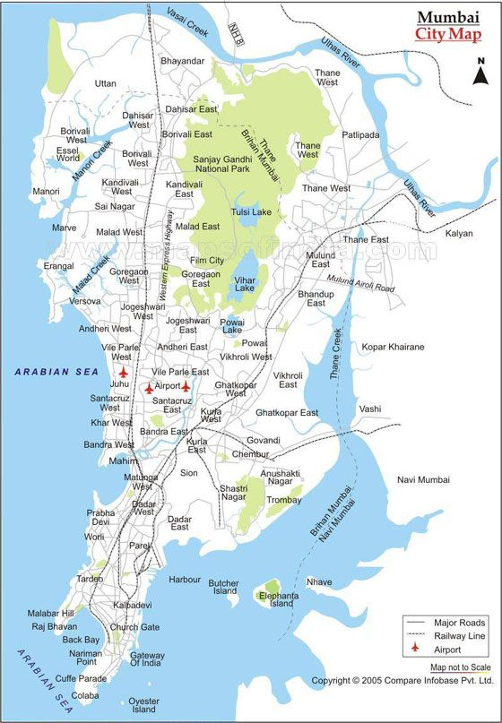

Mumbai (formerly called Bombay) is a densely populated city on India’s west coast. A financial center, it's India's largest city. On the Mumbai Harbour waterfront stands the iconic Gateway of India stone arch, built by the British Raj in 1924. Offshore, nearby Elephanta Island holds ancient cave temples dedicated to the Hindu god Shiva. The city's also famous as the heart of the Bollywood film industry. The picture displayed at the center above is of the Gateway of Inida and Taj Mahal Palace Hotel in Mumbai. The Gateway of India is an arch-monument built in the early twentieth century in the city of Mumbai, in the Indian state of Maharashtra. It was erected to commemorate the landing in December 1911 at Apollo Bunder, Mumbai of King-Emperor George V and Queen-Empress Mary, the first British monarch to visit India. The Taj Mahal Palace Hotel, is a heritage, five-star, luxury hotel built in the Saracenic Revival style in the Colaba region of Mumbai, Maharashtra, India, situated next to the Gateway of India. Historically it was known as the "Taj Mahal Hotel" or simply "the Taj". The hotel is considered one of the finest hotels in the East since the time of the British Raj.
